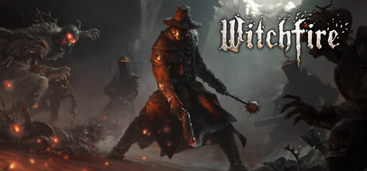
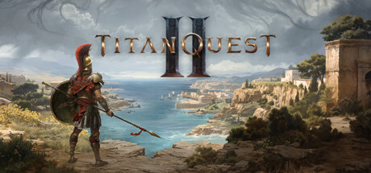
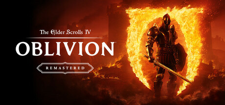
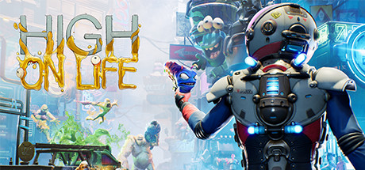
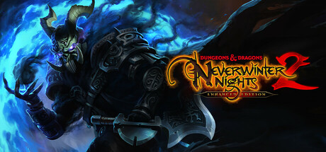
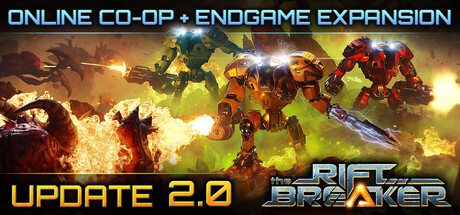

 Witchfire 最後更新：2026-01-14 基於其他中文化為基礎製作的繁體中文化以對應最新版本，並且重新調整用詞語與部分潤色。 ※以B站up的0.7.5漢化為基礎製作。預計正式版有官方繁體，出來後本模組將會停更。 下載模組 巴哈發布頁
Hollow Knight: Silksong 最後更新：2026-1-14 本繁體中文重譯專案已 2025/12/27 歷經四個月正式發布最終版。除非有問題，否則於悲傷之海DLC出來前不再更新。本重譯版是與社群同好合作的結晶，致力於提供最貼近原意以及繁體使用者的遊戲體驗。※以官方初版的簡體中文為基礎製作。 下載模組 巴哈發布頁
 Titan Quest 2 最後更新：2025-12-14 全文採用AI翻譯的正體中文化，完全自製，並經過大量校對。有任何翻譯的問題可以提出。未來有簡體中文會做簡轉繁。※若官方繁體出來本模組將會停更。 下載模組 巴哈發布頁
 The Elder Scrolls IV: Oblivion Remastered 最後更新：2025-08-03 非官方繁體中文化，修改的詳情請至巴哈發布頁面或模組網站觀看，這裡修正不少原翻譯奇怪的部分，理論上不受遊戲更新影響。※以官方簡體中文為基礎製作，並參考大學漢化的名詞。 Nexusmods 巴哈發布頁
Starfield 最後更新：2025-05-11 非官方繁體中文化，採用社群修正並且修正了整體20%的條目，名詞修改依據繁體中文官網的名詞，詳情請至巴哈發布頁面或模組網站觀看。※以官方簡體中文為基礎製作。 Nexusmods 巴哈發布頁
 High On Life 最後更新：2025-07-11 全全文採用AI翻譯的正體中文化，完全自製並經過校對(本人100%全成就)。由Rick and Morty創作者參與的劇本，內含許多吃毒文本，足以讓你會心一笑。※小遊戲字體有些小瑕疵但不影響遊戲體驗。 巴哈發布頁
 Neverwinter Nights 2: Enhanced Edition 最後更新：2025-08-07 原本是供親友使用，所以不打算長期維護，不確定遊戲更新是否會影響。以巴哈絕冬城之夜板的置頂文雙語中文化為基礎製作，其中西門城的秘密與EE新增的文本皆由我使用AI翻譯的，並且經過簡易校對與名詞統一。 使用方式為覆蓋遊戲目錄即可，將會覆蓋英文版。字體的部分請自己網路找字體修改，個人推薦思源黑體/台北黑體/思源宋體，其中名稱跟副檔名改得跟遊戲檔案的一樣即可。 下載模組
 The Riftbreaker 最後更新：2025-12-14 自用的一鍵簡轉繁工具。純粹的簡轉繁，遊戲更新如果文本有出現問題，請重新執行一次程式。請解壓縮到遊戲目錄\common\Riftbreaker(帶有packs資料夾的目錄)。※本工具可能會被報毒，壓縮檔內含原始碼，請安心使用。 下載工具